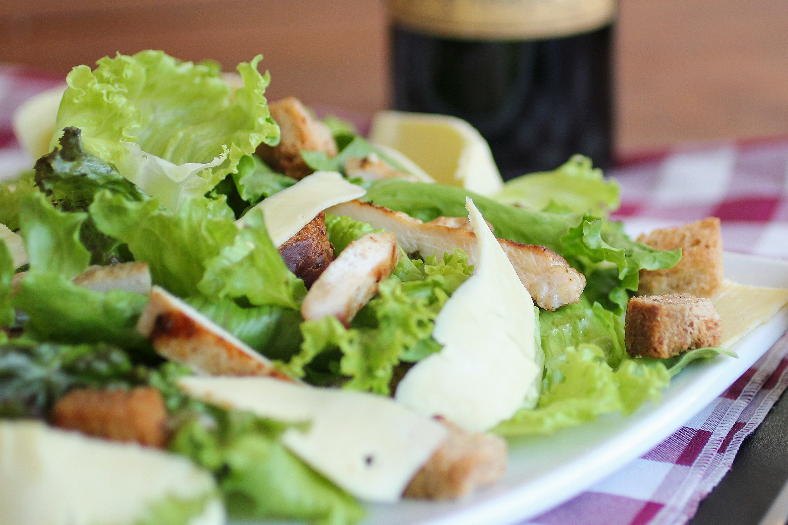
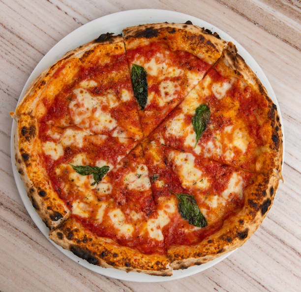

Recetas
Receta 1: Pasta al pesto

Deliciosa pasta al pesto con ingredientes frescos y fáciles de conseguir.
- Pasta
- Albahaca fresca
- Ajo
- Piñones
- Queso parmesano
- Aceite de oliva
- Sal
- Pimienta
Instrucciones:
- Cocer la pasta según las instrucciones del paquete.
- En un procesador de alimentos, mezclar la albahaca, ajo, piñones, queso parmesano y aceite de oliva hasta obtener una salsa homogénea.
- Mezclar la pasta con la salsa y sazonar con sal y pimienta al gusto.
- Servir caliente.
Receta 2: Ensalada César

Una ensalada clásica con lechuga crujiente, aderezo cremoso y crutones.
- Lechuga romana
- Crutones
- Queso parmesano
- Pollo a la parrilla
- Aderezo César
Instrucciones:
- Lava y corta la lechuga romana.
- Añade los crutones, el queso parmesano rallado y el pollo a la parrilla en trozos.
- Mezcla todo con el aderezo César.
- Sirve frío.
Receta 3: Pizza Margherita

Una pizza tradicional italiana con salsa de tomate, mozzarella y albahaca fresca.
- Masa para pizza
- Salsa de tomate
- Mozzarella fresca
- Albahaca fresca
- Queso parmesano
- Aceite de oliva
- Sal
Instrucciones:
- Precalienta el horno a 220°C.
- Extiende la masa y cubre con salsa de tomate.
- Añade rodajas de mozzarella y hojas de albahaca.
- Rocía con aceite de oliva y espolvorea sal.
- Hornea durante 10-12 minutos.